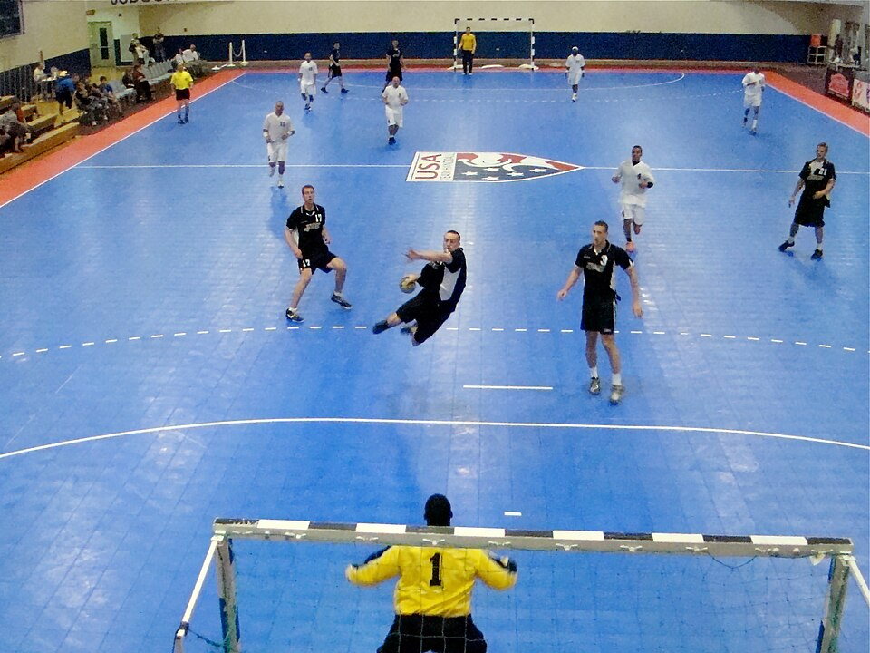
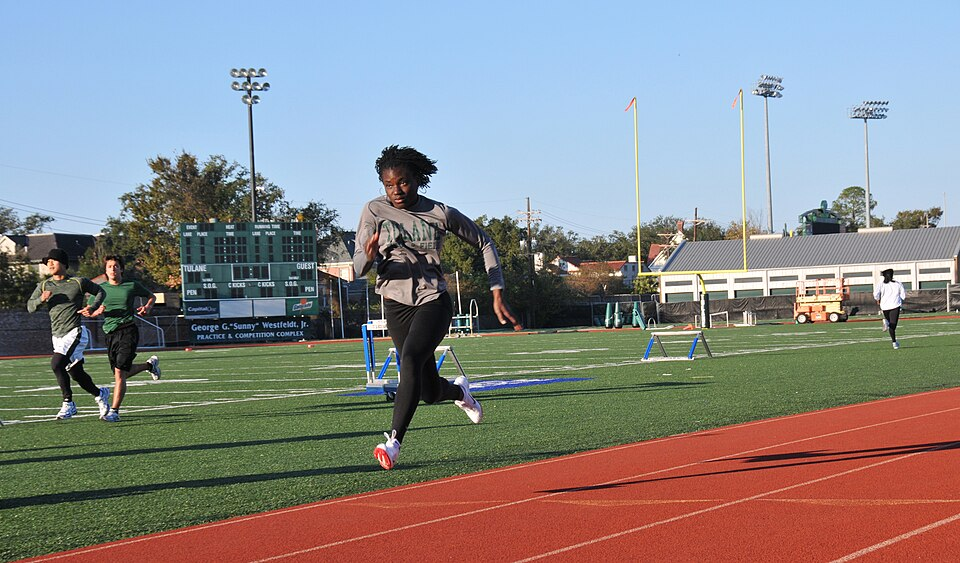

Handball Games vs. High-Intensity Interval Training for Better Health
Two Ways to Train Hard
Both workouts in this study use intermittent high-intensity exercise. That means
short bursts of very hard effort mixed with periods of rest or easy movement. The big
difference is how that effort is delivered: one is a game, and the other is a set
running plan (Han et al., 2026).
Small-Sided Handball Games (SSG)

A jump shot in team handball.
Team handball is a sport where players pass and throw a ball with their hands and try
to score in the other team's goal. A small-sided game uses fewer players and a
smaller court than a normal match, so every player touches the ball more and has to keep
moving. Players sprint, jump, change direction, pass, and shoot, which works both the
heart and the muscles (Han et al., 2026; Hornstrup et al., 2019).
What makes SSG different
It feels like playing a game instead of "working out."
It is social and builds teamwork.
It uses the upper body for passing, catching, and shooting.
The intensity changes based on how the game is going, so it is less predictable.
High-Intensity Interval Training (HIIT)

HIIT in this study was done as sprints on an outdoor running track.
HIIT uses short, all-out efforts followed by short recovery periods, repeated
several times. In this study, HIIT meant running sprints on a track at 80-85% of each
person's maximum heart rate, with walking breaks in between (Han et al., 2026). Research shows HIIT
can improve heart health and fitness in a short amount of time
(Batacan et al., 2017).
What makes HIIT different
The work and rest times are exact, so the effort is the same every session.
It can be done alone with no team or special court.
It is mostly running, so it focuses on the legs and the heart.
Many people find it harder and less fun than playing a game.
Words to Know
Sedentary
Spending most of the day sitting or not moving very much.
VO2max
The most oxygen your body can use during hard exercise. Higher means better aerobic fitness.
BMI (Body Mass Index)
A number based on height and weight that is used to estimate body size.
Resting Heart Rate
How many times your heart beats per minute while you are relaxed. Lower usually means a more efficient heart.
1RM (One-Rep Max)
The heaviest weight a person can lift one time. It is used to measure strength.